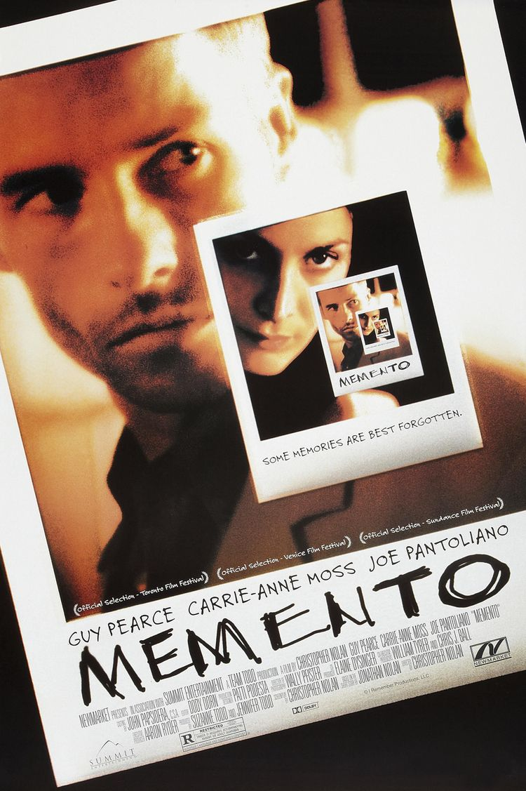
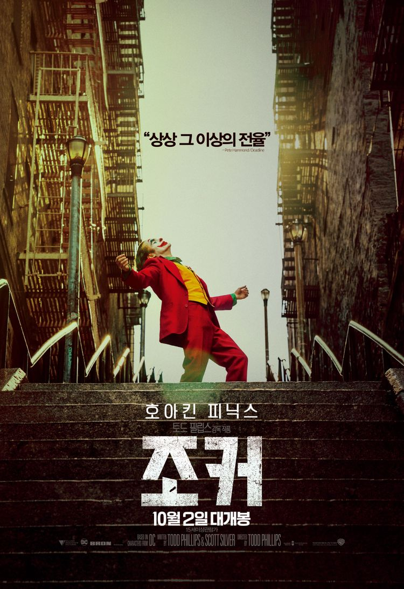

제74회 아카데미 시상식 각본상•편집상 후보작으로 크리스토퍼 놀란 감독의 2000년작 스릴러 영화. 총 25일이라는 상당히 짧은 기간 동안 촬영되었다. 2000년 베니스 국제 영화제 출품작이며 정식 극장 개봉은 그 다음해인 2001년이다. 선행성 기억상실증을 가진 주인공에 대한 이야기를 다루고 있는데, 실제 인물이었던 헨리 몰래슨의 이야기에 영화적 허구를 다량으로 버무려 각색한 영화다.

인터스텔라는 2014년에 개봉한 미국 영화다. 크리스토퍼 놀란 연출, 매튜 매커너히 주연인 작품이다. 점점 황폐해져가는 지구를 대체할 인류의 터전을 찾기 위해 새롭게 발견된 웜홀을 통해 항성 간(Interstellar) 우주 여행을 떠나는 탐험가들의 모험이 연대기 순으로 그려진다.
